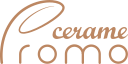

Portfolio
A digital book designed & written by me (Nidal) to communicate information about myself & my work.
Estimated reading time: 54 seconds.
Hello, my name is Nidal Ghonaim. I was born in 1996. I got my first computer somewhere around 2007. In my second year in high school, a teacher asked for somebody who could build a class blog. I've been in love with the web ever since.
I started my journey in web development by making custom blogger themes somewhere around 2012. Later I started teaching myself HTML, CSS, & Javascript. In the year 2014, I transitioned into game development & joined a small indie team -named Funktion- comprised of some highschool friends. I dedicated 2015 to learning 3D modeling with Maya. And in 2017 I allocated more time to teaching myself computer science online.
In 2018 I started my first year at Cardiff Metropolitan University. My graduation date is in 2021 for a bachelor's degree in business
management (IBM). On my own time, I learned to program in PHP using Laravel & Ruby using Ruby on Rails.
Despite my business major, my passion is programming & graphic design. I want to build a career in programming & designing web pages & apps (preferably in Ruby).
Email:
NidalGhonaim@gmail.comLinkedIn:
Nidal GhonaimTwitter:
@NidalGhonaimInstagram:
nidal.devWeb Development, Design
About the project: Beonrails is an online web application that enables its users to make business proposals online. Beonrails will also construct a contract & attach it to their proposal automatically.
Scope: Logo design, Web app design & programming.
Technology: Ruby Ruby On Rails HTML Sass JS
Software: VSCode Figma Photoshop
Visit BeonrailsWeb Development, Design
About the project: Promo Cerame was a website a I built for a local ceramics shop.
Scope: Logo design, Website design & programming.
Technology: HTML Sass JS
Software: VSCode Figma Illustrator Photoshop
Visit Promo Cerame